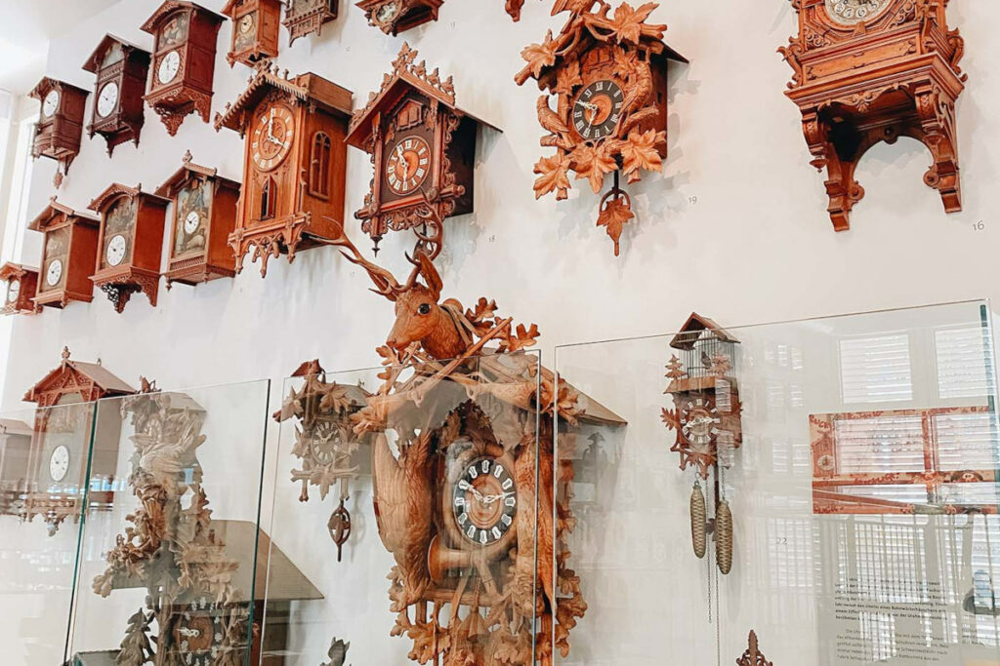

Eine Sammlung mit über 8000 Objekten aus aller Welt, die seit mehr als 160 Jahren besteht.
Tipp: Besuchen Sie die Ausstellung der ältesten Schwarzwalduhr!


Eine Sammlung mit über 8000 Objekten aus aller Welt, die seit mehr als 160 Jahren besteht.
Tipp: Besuchen Sie die Ausstellung der ältesten Schwarzwalduhr!
Der Hausberg Furtwangens mit einer Höhe von 1149 m und einem 17 m hohen Aussichtsturm.
Tipp: An klaren Tagen können Sie bis zu den Alpen sehen!
Seit 1956 ein Naturschutzgebiet mit beeindruckenden 1,7 Hektar Granitblöcken.
Tipp: Die Felsen entstanden durch Wollsackverwitterung vor 65 Millionen Jahren.
Die mündungsfernste Quelle der Donau, gelegen bei der Martinskapelle und dem Kolmenhof.
Tipp: Verfolgen Sie den Verlauf der Donau bis zum Schwarzen Meer!
Ein Einblick in die Reiseverhältnisse der 1950er Jahre mit authentischer Einrichtung.
Tipp: Beachten Sie die nostalgische Ausstattung der Gasträume!